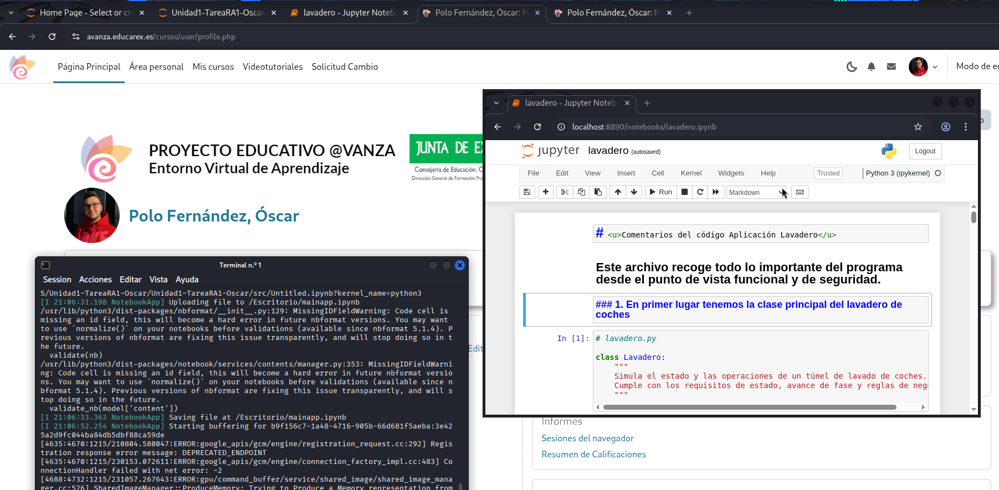
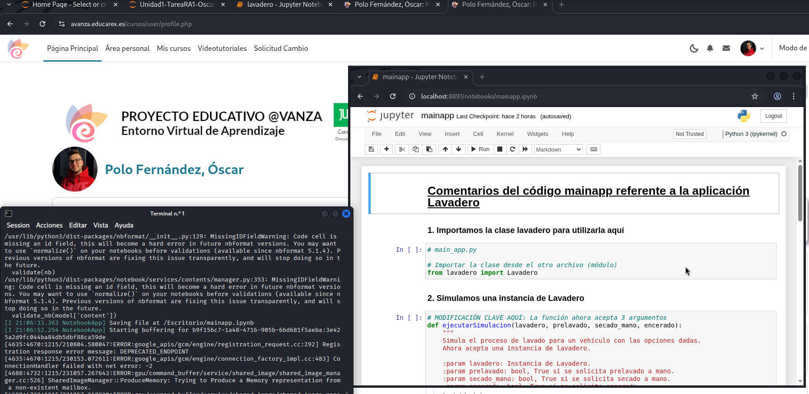

Elementos de Python
En este apartado explico las funciones de los dos archivos que construyen el programa e incluyo dos enlaces correspondientes a dos cuadernos de Jupyter Notebook en los que muestro el código comentado de la aplicación Lavadero y de la capa de ejecución mainapp.
¡IMPORTANTE! En este apartado, el código está comentado, con el objetivo de ir entendiendo las diferentes fases del programa y cómo funciona, sin errores en el código corregidos. Los errores están corregidos en Ejecución y Depuración.
1. Funciones de los archivos
-
main_app.py: Este archivo es el "controlador" del lavadero. Sirve para iniciar el lavadero, decidir los ejemplos que se prueban, mostrar los resultados por pantalla... Se tiene que ejecutar y decide qué pasa y cuándo.
-
lavadero.py: Este archivo sirve para controlar los estados y fases del lavadero, calcular precios, llevar los ingresos... No se ejecuta solo, ni imprime ejemplos ni decide el flujo principal, solo responde cuando se le llama.
2. Código comentado - Jupyter Notebook
3. Realización
A continuación adjunto capturas de pantalla en las que muestro la autoría de estos dos cuadernos:
- En primer lugar, lavadero.py

- En segundo lugar, main_app.py
